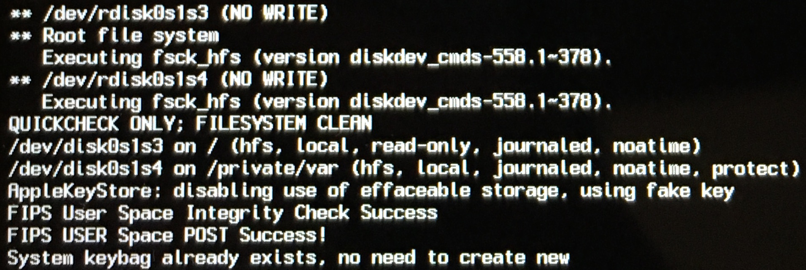
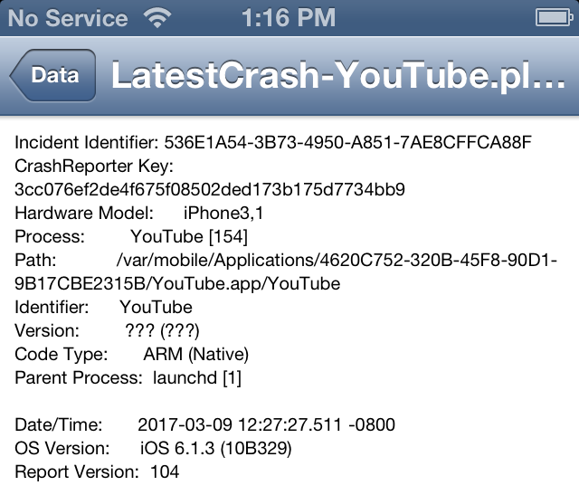
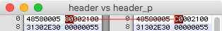

Introduction
If you want your dualbooted system to work properly, your HFS on Data-partition must be protected.
What does it mean?
If volume has "protect" attribute, iOS will encrypt data on it.HFS on Data-partition in iOS must have this flag, otherwise applications which use data protection (these are most of applications, by the way) will crash.

How can I make my FS to be protected?
Just pass '-P' flag to newfs_hfs, when you create your FS.Problem
You won't have any issues with '-P' flag, if your first iOS version is older than 9.0. But on newer versions this flag will cause terrible issue:@nyan_satan @danzatt @iApeiron when you set the protect flag (and mount) from an iOS 9+ OS, the partition will not mount from lower OS’s
— Jonathan Seals (@JonathanSeals) January 11, 2017
(Mounting and writing to second OS's Data volume is necessary part of dualboot's setup)
Solution
How does iOS detect whether volume is protected or it's not?
It looks to HFS header. uint32_t at 0x4 is "attributes" (more info about HFS+ volume structure available here). When volume isn't protected, first byte of attributes is 0x80, but when it's protected, first byte is 0xC0.So, what should I do?
- First of all, you need to create unprotected HFS on Data-partition
- Then move your /private/var/* to it
- Remove files at mobile/Library/PreinstalledAssets and SweepStore at log/asl
- Unmount this partition
- Replace 0x80 by 0xC0 in HFS header
- Never mount it again on iOS 9+
Important note: after convertion file's contents will be destroyed, but directories, symlinks and their attributes will stay safe. That's why we delete all files before
Video demonstration is available here